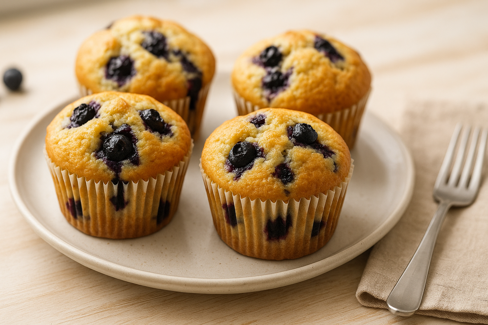

Muffins de arándanos

Los muffins de arándanos son una de las recetas más populares de la repostería. La suavidad de la masa se combina con el sabor ligeramente ácido de los arándanos para crear un postre equilibrado y delicioso. Además, son muy fáciles de preparar y pueden conservarse durante varios días sin perder su sabor ni su textura.